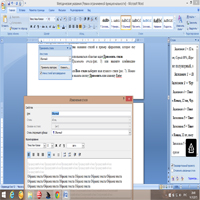
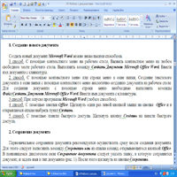
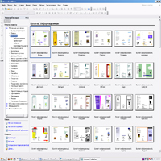

Практическая работа № 1

Знакомство с программой Панель управления ОС Windows и приобретение навыков работы со средствами настройки оболочки ОС Windows
ЗАДАНИЯ
Осуществите настройки: манипулятора мышь; клавиатуры; элементов оформления экрана; панель задач и меню "Пуск"; языка и региональных стандартов; даты и время.
Практическая работа № 2

Изучение интерфейса Microsoft Word, получение навыков редактирования и форматирования, рецензирования документа.
ЗАДАНИЯ
Установка полей и ориентация бумаги.
Поля – области страницы, где не может размещаться текст.
Выполните команду: Разметка страницы → Поля → Настраиваемые поля.
Верхнее – 2 см.
Нижнее – 2 см.
Левое– 3 см.
Правое – 1 см.
Ориентация – книжная (Разметка страницы → Ориентация → книжная)
Практическая работа № 3

Изучение информационной технологии создания и форматирования таблиц в текстовом редакторе MS Word.
ЗАДАНИЯ
Создание таблиц с использованием кнопки «Вставить таблицу» панели инструментов «Стандартная». Создание таблиц с использованием инструмента «карандаш» меню «Таблицы и границы»
Практическая работа № 4
Изучить гипертекстовую технологию. Научиться создавать текст с гипертекстовыми ссылками.
ЗАДАНИЯ
Измените стиль Заголовок 3 в соответствии с одним из предложенных вариантов.Используя приведенные фрагменты, разработать гипертекстовый документ по теме «Музыкальный звукоряд», упорядочив фрагменты от более простых понятий к более сложным, определив ключевые слова и установив связи между фрагментами
Практическая работа № 5
Изучить технологию форматирования текста, научиться создавать колонтитулы, закладки, сноски.
ЗАДАНИЯ
1. Запустите текстовый редактор Microsoft Word из меню ПУСК.
2. Задайте все поля страницы по 2,5 см на вкладке Разметка страницы – Параметры
страницы.
3. Перед началом работы установите размер шрифта – 12 пт.; тип шрифта - Times New
Roman на вкладке Главная – панель Шрифт.
Практическая работа № 6
Научить использовать готовые шаблоны издательской системы Publisher. Выработать практические навыки создания буклетов средствами MS Publisher
ЗАДАНИЯ
isher. Слева в области задач
выберите Публикации для
печати>Буклеты.
2. В правой области окна
появятся макеты информационных
буклетов (шаблоны). Их можно просмотреть, перемещая курсор с одного макета на
другой. Для выбора один раз щелкните на понравившемся макете.
Практическая работа № 7

На практике рассмотреть создание презентаций в программе PowerPoint
ЗАДАНИЯ
1. Создайте презентацию на одну из нижеперечисленных тем, состоящую из десяти
слайдов:
-Компоненты Microsoft Offic";
-Времена год";
- Мои увлечени";
- Моя любимая группа;
- Мой любимый фильм;
- Мой любимый исполнитель.
2. Выберите шаблон оформления для всех слайдов. Для первого слайда назначьте
цветовую схему, отличающуюся от оной на прочих слайдах. Измените фон второго слайда.